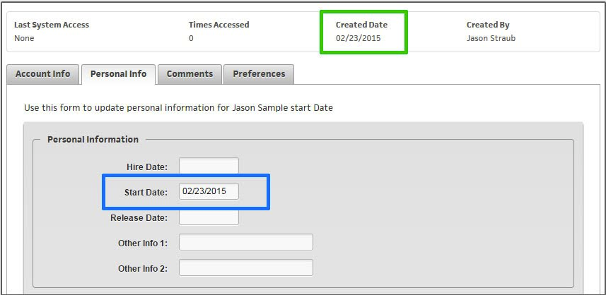
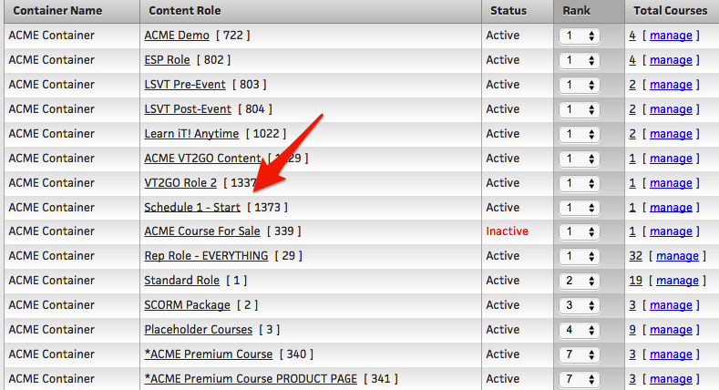
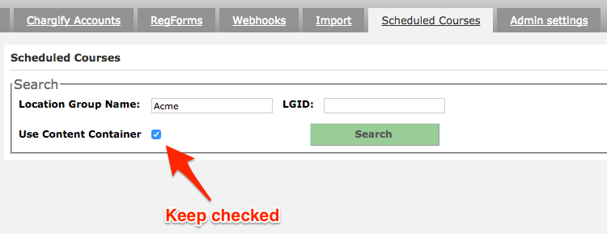
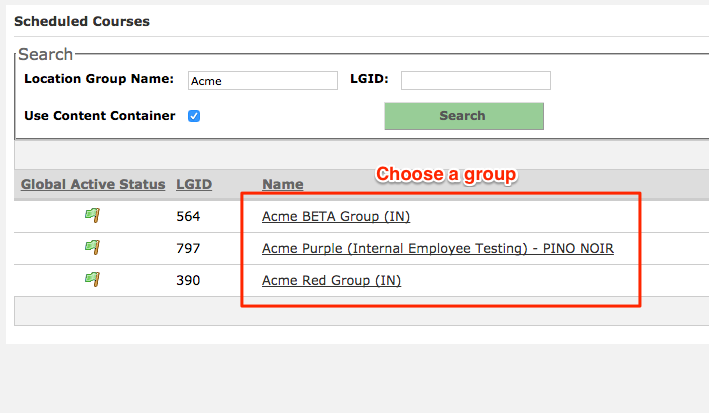
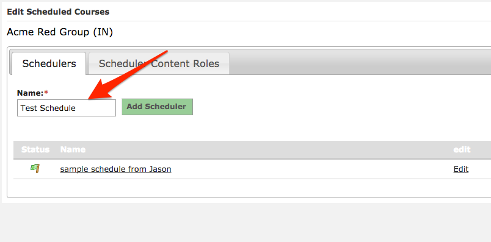
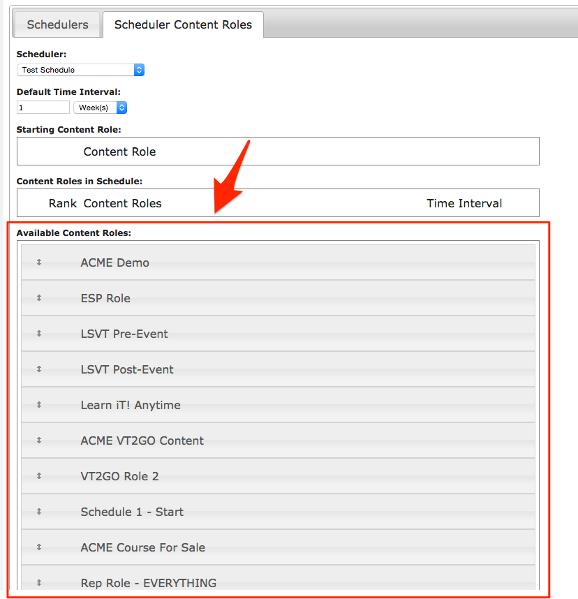
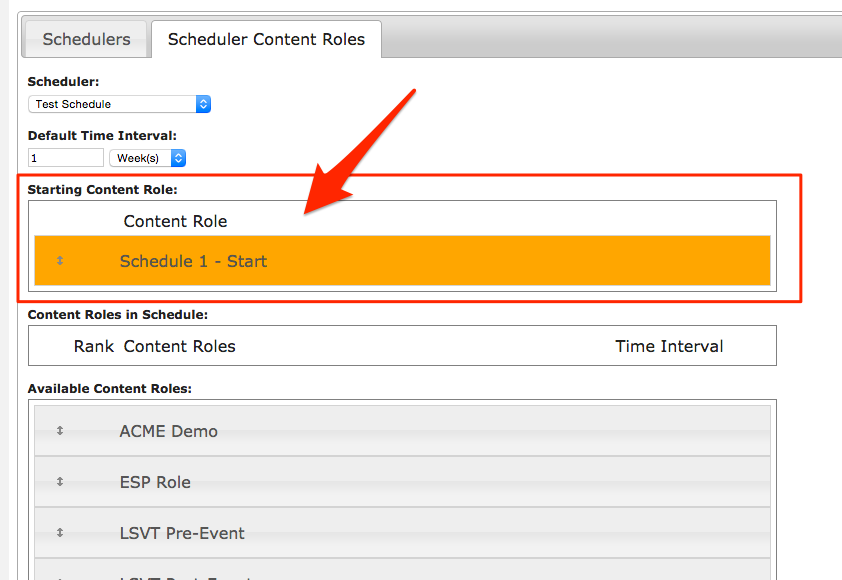
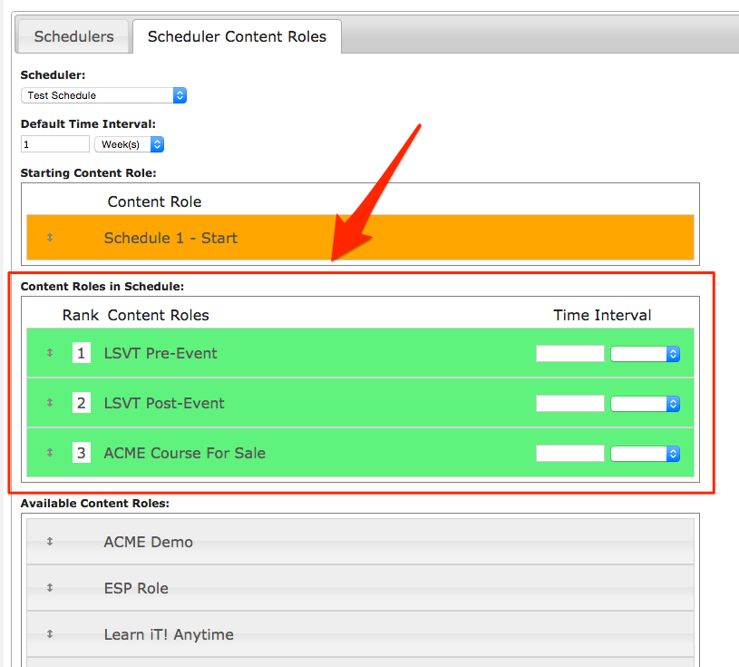
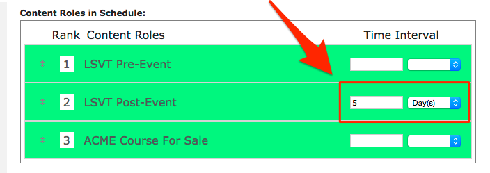

We are currently working on a Super User Admin area for this feature, which will be available soon. In the meantime, please reach out to the Client Care department for assistance if you need any Content Schedules created or revised.
This feature will allow us to "Schedule" (roll out" content to a user, on a date range) - based on a field called "Start Date" - which is on the User's profile, in the second tab, called Personal Info." The field "Created Date" which is noted in the green box in the screen shot below - is the actual date the user was created, and this cannot be changed. The field called "Start Date" is noted in blue in the screen shot below, is auto-populated by the "Created Date" however this field "Start Date" can be changed, for the reason of changing this user's "Schedule" if desired.
This "Scheduler" feature will run off of the "Start Date" and it will roll out content roles, based on that "Start Date."

Creating A Schedule
To Create a "Schedule" for a client, use the webservices/API admin tab "Scheduled Courses" and then search for the desired "Group" - one the desired Group is selected, you can create as many "Schedules" as desired. Know that the "Scheduler" uses Content Roles to change the content, so you will want to have your desired Content Roles set up first, then go to the API Admin area to create the Schedule, using those Content Roles.
- How the Scheduler knows to put a certain user on a "Schedule" is by the initial, or "Starting" Content Role, by a user being a member of that "Starting" Content Role, it will put that user on the Schedule. In this example below - our "Starting" Content Role is called "Schedule 1 - Start." (example - if you are creating a Schedule that rolls content out by "week" - you may want to name this "starting role" - "Week 1" - but this is flexible for you to name it as needed).

-
Use whatever means you need, to ensure the desired users have access to this Content Role - it can be through the "Auto Populate Role ID's by Access Level" or whatever you need.
-
In Web Services/Schedule Courses admin, configure a new schedule. Search for a group. It is suggested to search for groups that have “Use Content Container” checked. This will only return groups that have content containers already configured - as that is a requirement to use the Scheduler - you cannot use the Scheduler on a Group that is not using "Content Containers."

- After choosing the group, name the scheduler and click “Add Scheduler”


- Once you have created a “Scheduler”, you will be shown a table that contains all available Content Roles that could be added to the schedule.

Define the "Starting" Content Role
- You will need to drag and drop the desired Content Role to the “Starting Content Role” row on top of tables. This will let the Scheduler know that every user that have that initial role assigned to them, will be part of the this Schedule- it will display in Orange, as in the screen shot below.

Specifying the rest of the Content Roles to "roll out"
- You then need to drag and drop the remaining courses into the “Content Roles in Schedule” table in the order you wish them to appear, they will turn Green, as shown in the screen shot below.

- Each content role will get turned on according to the “Default Time Interval” (Example: 1 week). The time interval uses the user's "starting date" as base for schedule. For example: If second role is set to 1 week, then the second role would be turned on 1 week after the user's starting date. Third role would be 1 week + 1 week after start date, etc.

-
You can also override the default time interval for each role. For example, if the 2nd role is set to 5 days, then it would get turned on 1 week (because the 1st Content Role has no value in the "Time Interval" it will use the default value of "1-week") + 5 days (set for 2nd role) from the user's "Start Date" - then the 3rd Content Role will turn on 1 week after the 2nd, as it has no value set, and will use the "1 week" default value.
-
A less confusing setting would be just put "7-Days" on each Content Role - but this is just to show that is has a lot of flexibility.

NOTE
If you are using a content role in multiple schedules, the content role will be turned on according to the earlier schedule, therefore could cause conflicts with the other schedules.